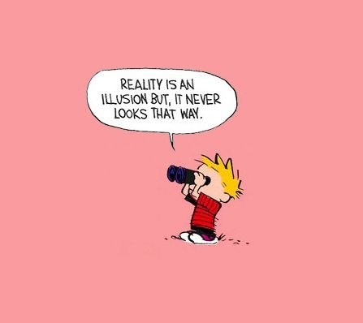

“You can’t stop your mind from thinking because you don’t start it thinking.”
--Adyashanti
-----------
“The notion that the one who thinks is completely separate from the reality that he thinks about is of course firmly embedded.”
―David Bohm
Thoughts. We’re used to them, aren't we?
In fact we’re so accustomed that we have come to call them, “mine”.
As in, these belong to me. These are my thoughts.
We think we own these babies.
Which is kind of funny if we think about it. (little joke. Har har)
After all, it’s not like, “I’m not good enough,” or “There’s something wrong with me,” or “I need something different...”
hasn’t appeared identically, word for word, in a zillion other heads, a zillion other times, over centuries.
It’s not like, despite our ownership, thoughts don’t come when they want, stay as long as they please, and repeat as much as they like.
I mean, we often hate them, spend fortunes to get rid of them, and still they say and do what they want.
It seems we are not in control of our property.
Yet we persist in holding on tight to this “mine” idea anyway, because, for something to be owned, there has to be an owner.
Enter the person. Enter the self. Hello solid, real thing.
Now there’s a me doing the thinking, a me with characteristics such as broken, bad, failure, fool. A separate me, an alone me, a me who is the only one who thinks these thoughts.
Now there is a unique, individual, independent-of-thought me who carries one-of-a-kind pain and special not-enoughness.
Whew. That’s a lot of me-ing.
Especially considering how unprovable it is that any bit of this is “one-of-a-kind.”
So what might happen if we were somehow able to notice the repetitive nature of the thinking that has come to us all these years?
What if we actually were to notice it has told us the same not-nice things, with the same not-nice words, over and over and over, since forever?
Like a scripted song and dance routine. Repeating, repeating, repeating. On everlasting replay.
“I am not enough, I’m at fault, I’m broken, weak, unlovable.” Rewind. “I am not enough, I’m at fault, I’m broken, weak, unlovable.”
For decades.
The script rarely varies.
Because, as it turns out, thought is lazy as hell.
Dialing in its lines, getting away with the very least necessary…
to create the appearance of sentience. To create the appearance of knowing, perceiving, understanding. To create the appearance of an individual.
To create the appearance of reality.
Not actual reality of course. Thought doesn't have that power. Just the appearance of reality. Just thoughts about reality.
Thinking creates only mirages.
Which means we have no idea what’s real. We have no idea what’s true.
We have no idea who, what, or even if, we are.
Not that any of this matters.
I mean, it’s not like thinking which has existed for thousands of years is suddenly going to stop, or leave us alone, or change its script, if only we meditate or get therapy or inquire or become enlightened enough.
No, it’s going to keep saying its lines.
The way it always has.
Because that’s what it does.
It's just that there can be a fair amount of relief, of peace, of quiet, though, in not taking the script personally.
In no longer assuming that a bunch of miscellaneous blah blah blah, stuck on repeat for millennia, has anything to do with us.
In not assuming any causal relationship between thinking and “reality.”
Then the sense of individual self starts to feel a little less solid, a little more wispy, a little less certain.
Which simply feels better.
Since being an individual is hard work, and often, usually, painful.
Luckily suffering, despite what thought says, is not a requirement.
So we might consider divesting of ownership.
Letting thought blather its scripted lines, ad infinitum.
Nothing cares.
It’s nothing
To do with us.
Now that’s off script, right there.
Click here to get your Mind-Tickled every week.
“Listen: this world is the lunatic's sphere,
Don't always agree it's real.
Even with my feet upon it
And the postman knowing my door,
My address is somewhere else.”
--Hafiz
-----------------------
"You have worn this virtual reality headset all your life. What happens if you take it off?"
--Donald Hoffman

Click to watch Robert Saltzman and Judy talking on Zoom.
Want to watch Judy's Buddha At The Gas Pump interview? click here